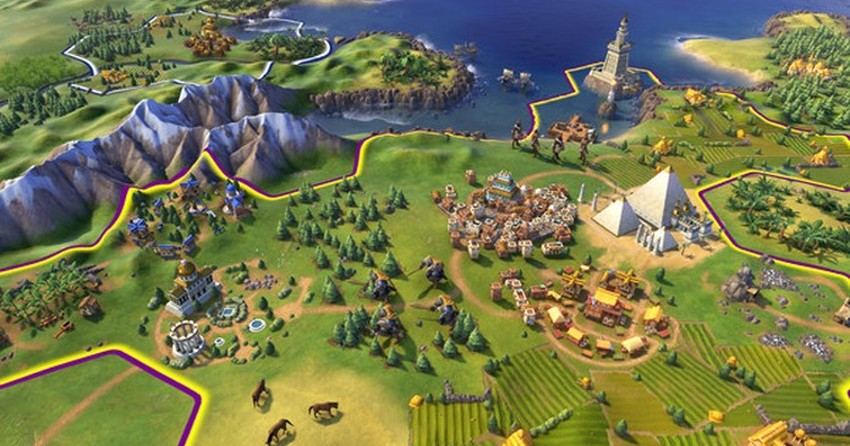
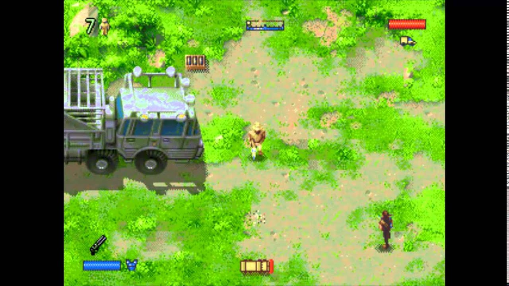
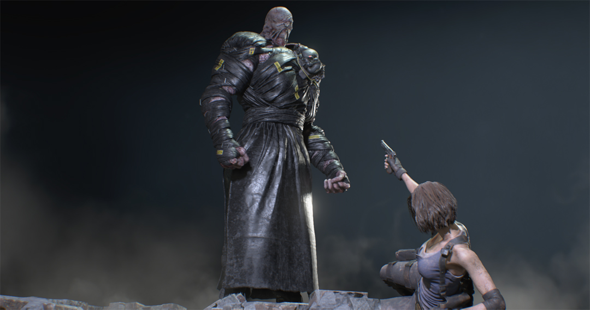
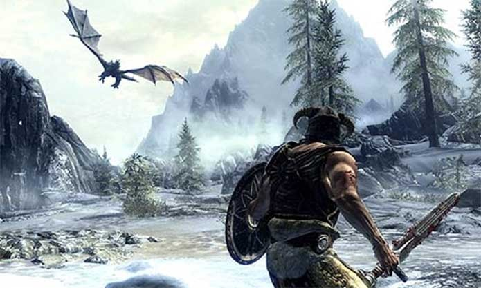

O objetivo deste top 10 é poder recriá-lo de tempos em tempos e ver a minha opinião mudando ao longo dos anos (e com o descubrimento de novos jogos).
Resolvi usar três critérios que consigo mensurar (para poder comparar os jogos) e fazer uma pequena resenha explicando o porquê cada jogo está aqui. Os três critérios, que vão variar de 1 a 5, são:
História: o quanto a história me cativou e permeneceu comigo após o fim do jogo.
Imersão: o quanto o jogo conseguiu me levar pra dentro do mundinho.
Jogabilidade: o quanto é/foi divertido jogar o jogo, como passatempo.
Apenas um disclaimer: esses três critérios server apenas para comparar esses 10 jogos entre eles. A nota 1 em imersão, por exemplo, não quer dizer que a imersão do jogo é péssima. Quer dizer que, entre esses jogos, a imersão dele é a pior.
10 - Civilization VI

| História: | 🮠|
| Imersão: | 🎮🎮🎮🎮 |
| Jogabilidade: | 🎮🎮🎮🎮🎮 |
Jogo de tabuleiro sem tabuleiro não é golpe e por isso Civilization inicia o meu top 10. Com milhões de caminhos e escolhas ao longo da partida, é do tipo de jogo que você passa horas jogando sem perceber o tempo passar.
Uma observação: só joguei o Civilization VI, por isso especifiquei o sexto jogo aqui e não a série toda.
9 - The Lost World: Jurassic Park

| História: | 🮠|
| Imersão: | 🮠|
| Jogabilidade: | 🎮🎮🎮🎮 |
Nessa lista tem jogo velho, tem jogo de Mega Drive e tem jogo do meu filme ruim favorito. E The Lost World: Jurassic Park é todos eles. O jogo tem co-op, tem um quase mundo aberto, também tem um plot horrÃvel no qual você captura e mata animais inocentes, mas é bem diverto.
8 - The Last of us
| História: | 🎮🎮🎮🎮 |
| Imersão: | 🎮🎮🎮 |
| Jogabilidade: | 🎮🎮🎮 |
Joguei The Last of us duas vezes e na primeira achei um jogo bom em tudo, mas que não era marcante em nada. Na segunda vez, joguei no modo survivor e é outro jogo. Mas 8º lugar tá bom porque tem uma barriga gitante no primeiro ato.
7 - Resident Evil 3

| História: | 🎮🎮 |
| Imersão: | 🎮🎮🎮🎮 |
| Jogabilidade: | 🎮🎮🎮 |
Se nem o Brad Pitt conseguiu fazer uma história de apocalipse zumbi melhor, Resident Evil 3 precisa estar na lista. Ponto a mais de imersão pela história paralela contada nos files. Não joguei o remake ainda, mas foi bom para conseguir uma imagem show.
6 - To the Moon

| História: | 🎮🎮🎮🎮🎮 |
| Imersão: | 🎮🎮 |
| Jogabilidade: | 🮠|
História espetacular, que fica na cabeça uma semana e no coração pra sempre.
5 - What Remains of Edith Finch

| História: | 🎮🎮🎮🎮🎮 |
| Imersão: | 🎮🎮🎮🎮 |
| Jogabilidade: | 🎮🎮 |
Uma ode à narrativa, What Remains of Edith Finch conta com maestria uma história maravilhosa. Jogo para terminar e bater palmas. Escrevi mais sobre ele aqui.
4 - Skyrim

| História: | 🎮🎮 |
| Imersão: | 🎮🎮🎮🎮 |
| Jogabilidade: | 🎮🎮🎮🎮🎮 |
O misto perfeito de imersão e jobabilidade é jogar um mundo aberto gigante e não querer dar fast travel. Só não está mais na frente porque eu escrevi Skyrim aqui e meu editor de texto começou a bugar.
3 - Bioshock

| História: | 🎮🎮🎮🎮🎮 |
| Imersão: | 🎮🎮🎮🎮 |
| Jogabilidade: | 🎮🎮🎮 |
A ambientação incrÃvel, a trilha sonora impecável, as histórias paralelas contadas nos diários de áudio, um FPS muito divertido e o plot twist sensasional justificam esse bronze pra Bioshock.
2 - Life is Strange
| História: | 🎮🎮🎮🎮🎮 |
| Imersão: | 🎮🎮🎮🎮 |
| Jogabilidade: | 🎮🎮 |
Life is Strange e o prequel Life is Strange: Before the Storm formam uma história perfeita (e uma trilha sonora também). Sempre que termino uma boa história, fico com a sensação de ter perdido amigos. Quando terminei o Before the Storm, o sentimento foi o mesmo de terminar um relacionamento.
1 - A série Half-Life
| História: | 🎮🎮🎮 |
| Imersão: | 🎮🎮🎮🎮🎮 |
| Jogabilidade: | 🎮🎮🎮🎮🎮 |
Minha série de jogos preferida, foi o que me fez virar fã de histórias (pós-)apocalÃpticas. O sentimento que o capÃtulo Highway 17 do Half-Life 2 gerou em mim virou meu benchmark de imersão. FPS extramamente divertido, com uma história meio confusa, mas tem 1000 vÃdeos no YouTube explicando. E um grande e educado vai se foder pra Valve por ter acabado o último jogo com um cliffhanger e estar há mais de 13 anos sem lançar uma continuação.